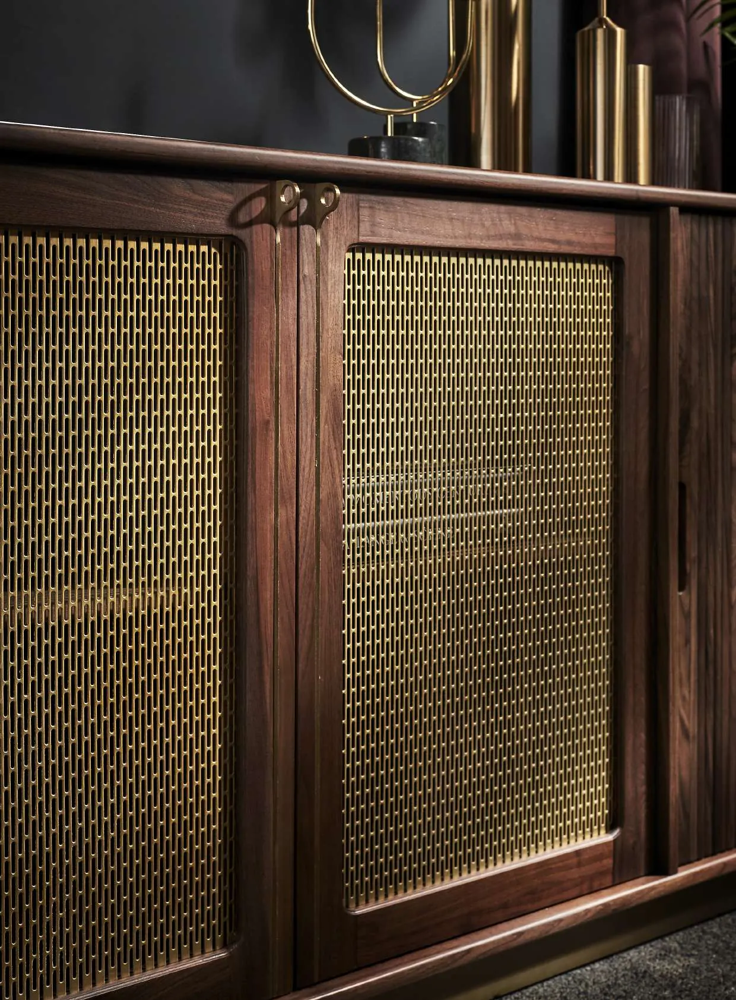

No. 01
ALTO — Alternative Objects
"Pieces that have personality, and a story to tell."
A global contemporary lifestyle house creating uncommonly elegant objects — walnut fluting, woven brass, travertine and green marble. The Hotel Paradiso collection channels the Mediterranean glamour of the 60s and 70s into modern Bangalore living rooms.